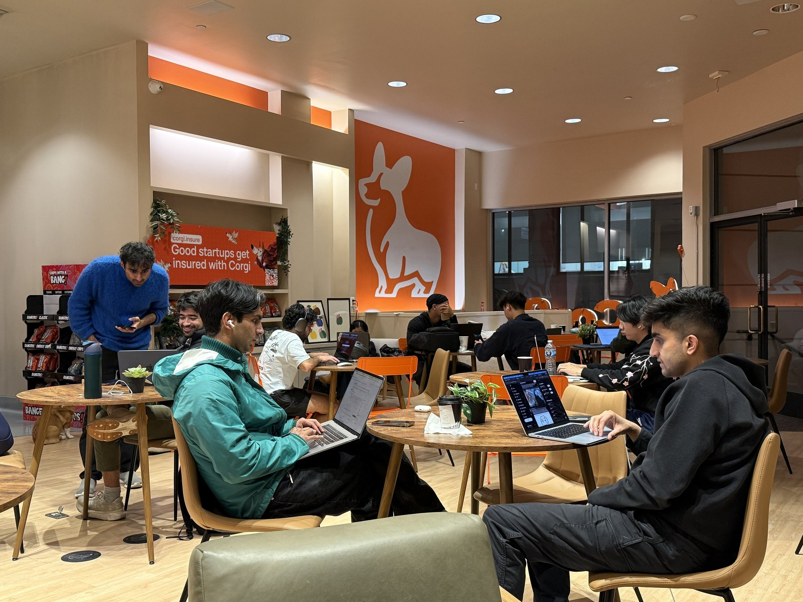

生产方式变化
AI降低知识、工具和创造能力的使用门槛，更多创新活动从小型团队与个人开始。
05 / 场地认识 · TERRITORIAL DNA
山地自然、产业腹地、成熟社区、岭南街巷、公共文化、都市中心与湾区门户，在同一条空间轴线上相遇。

自然山地 · 产业腹地 · 创新增量
成熟街巷 · 青年社区 · 城市烟火
都市中心 · 文体生活 · 湾区门户
01 / 价值判断 · INCLUSIVE CITY
留住每一代年轻人，是深圳创新之城立足之本。
无论是一座城市还是一个街区，创新主体的多样化是创新生态可持续生长的关键。

02 / 价值判断 · AI UNIT
AI降低了知识获取、工具使用、创造能力与组织成本的门槛。
更多创新活动从小型团队与个人开始。
这不是趋势预测，而是正在发生的结构性转变——
从大机构主导，走向分布式的个体创新网络。

03 / 价值判断 · THIRD SPACE
创新不再只发生在写字楼与实验室。
咖啡馆、巷道、联合办公——非正式场所正成为新的孵化土壤。
对个体创新者而言，可负担的空间就是基础设施。
它决定了谁能留下来，谁能开始尝试。


04 / 价值判断 · SF MIGRATION
Anthropic、OpenAI 等生态圈在市区街巷密集生长。
人与人之间高频碰撞的社群网络，正吸引越来越多的创新主体加入——
从南湾大厂据点，转向可步行、可偶遇的城市肌理。
50% 吸纳全美 AI 风险投资 · 60% 占全美 AI 融资总额 · 33% 硅谷 AI 初创总部或核心团队迁入

人与人之间高频碰撞的社群网络正吸引越来越多的创新主体加入
05 / 价值判断 · NEXT GEN
在丰富物质与精神世界中成长起来的新一代，
他们对创业和工作之外的生活有着同等重要的追求。
山海资源仍然是高密度城市长期美好生活的稀缺品。
能否提供真实的自然触达、有温度的社区生活、丰富的精神供给，
正在成为城市吸引和留住人才的新竞争维度。


06 / 价值判断 · ENDOWMENT

09 / 三区结构 · OVERVIEW


城心 · 灵芝 案例 / Corgi Cafe

旧金山低成本创新业态：租下后一层改为 24/7 Builder Cafe，上层办公；OPC、独立开发者与 founder 在此办公，桌上提供创业保险入口。母公司为 AI-native 全栈创业保险公司 Corgi Insurance。
死掉的临街铺面改成全天候 Builder Cafe；公司总部在同楼上办公。

OPC · Indie · Founder 的 watering hole；VC 也会在此扫人才。

第三空间叠监管金融产品入口——Cafe 是品牌与社区磁铁。

1F 磁体 × 上层弹性办公 ×「桌上服务」（财税 / 法务 / 算力券等），激活暗街铺面，而非再堆空置零售。


关于办公去化，可以通过强运营的方式增强弹性和产品力： Frontier Tower | 16 Floors. SF's Deep-Tech Vertical Village.
Kit · TEKUMA Urban Designer · Slide Hook
叙事锚定 CRE 20–30% 空置。不坐等大租户，把楼卖成 Citizenship（约 $150–190/月）+ 私办 + 活动舱的弹性产品。

AI / 机器人 / 生科 / Eth / 体适能 / 艺术分层运营；Spaceship 办黑客松与 Town Hall。主题楼层制造 serendipity，而非纯租金表。

Floor leads + 高频活动 + 公民自治叙事；装修可糙、运营要密。~$11M 拿下前 WeWork / Mid-Market 空楼，用社区速度激活空间。

映射：主题楼层（终端/机器人/硬件）+ 会员/弹性工位 + 1F 磁体 + 共享工具与 Demo Day。卖运营范式，不必照搬品牌与共居许可。

23 / 三区结构 · 定位深化